2015年北京市中考物理试题 原卷解析
2015年北京市中考物理试卷
参考答案与试题解析
一、单项选择题（下列各小题均有四个选项，其中只有一个选项符合题意，共30分，每小题2分）
1．【分析】根据常见的导体和绝缘体进行判断。常见的导体包括：人体、大地、各种金属、酸碱盐的溶液等。常见的绝缘体包括：塑料、陶瓷、橡胶、空气、玻璃等。
【解答】解：塑料筷子、陶瓷碗、玻璃果盘都不容易导电，属于绝缘体；不锈钢汤匙是金属制品，是导体。
故选：C。
【点评】常见的导体包括：人体、大地、各种金属、酸碱盐的溶液等。常见的绝缘体包括：干木材、塑料、橡胶、陶瓷等。导体和绝缘体没有明显的界线，在条件改变时是可以相互转化的。
2．【分析】能够源源不断的从自然界得到的能源叫可再生能源；短期内不能从自然界得到补充的能源叫不可再生能源。
根据可再生能源和不可再生能源的特点来作答。
【解答】解：
天然气是化石能源，会越用越少，不可能在短时间内补充，是不可再生能源；
太阳能、风能、水能可以源源不断的得到，是可再生能源。
所以利用不可再生能源发电的是燃气发电。
故选：A。
【点评】本题主要考查学生对：可再生和不可再生能源的特点的理解和掌握，要理解。
3．【分析】A、增大摩擦的方法：在压力一定时，增大接触面的粗糙程度。在接触面的粗糙程度一定时，增大压力；
B、减弱噪声的途径：在声源处减弱，在传播过程中减弱，在人耳处减弱；
C、减小压强的方法：在压力一定时，增大受力面积来减小压强。在受力面积一定时，减小压力来减小压强；
D、驾驶员开车是要系好安全带，是为了防止惯性带来的危害
【解答】解：A、汽车轮胎表面凹凸不平的花纹，增加了接触面的粗糙程度，从而可以增大摩擦。故A错误；
B、汽车装有消声器，可以在声源处减弱噪声，但不可以把汽车产生的噪声全部消除，故B错误；
C、载重汽车的车轮做得比较宽，是增大了受力面积，减小了对地面的压强。故C错误。
D、驾驶员开车是要系好安全带，主要是为了防止由于惯性带来的伤害，故D正确。
故选：D。
【点评】此题是一道综合性很强的题目，涉及的知识点较多，并且与实际生活联系紧密，体现了物理来源于生活的理念。
4．【分析】要解决此题，需要掌握光的反射现象，知道平面镜成像是由于光的反射形成的。
要掌握光的折射现象，知道水底看起来比实际的要浅、斜插入水中的筷子向上折、海市蜃楼、凸透镜成像都是光的折射。
要掌握光沿直线传播现象，知道影子的形成、日月食的形成、小孔成像都是光沿直线传播形成的。
【解答】解：A、影子的形成说明光是沿直线传播的，由于光的直线传播，被物体挡住后，物体后面就会呈现出阴影区域，就是影子，故与题意不符；
B、景物在水中形成“倒影”，属于平面镜成像，是由于光的反射形成的，符合题意。
C、用放大镜看文字时，文字变大了，属于凸透镜成像，是由于光的折射形成的。故与题意不符。
D、从水中笔上反射的光从水中斜射入空气中时，发生折射，折射光线远离法线，当人逆着折射光线的方向看时，看到的是笔的虚像，比实际位置偏高，所以感觉折断了，故与题意不符；
故选：B。
【点评】光的直线传播形成的现象包括：小孔成像，影子的形成，日、月食的形成等；光遇到物体表面会发生反射：平面镜成像就是光的反射形成的；光从一种介质斜射入另一种介质时，光的传播方向会发生偏折：钢笔错位、筷子变折、海市蜃楼，凸透镜成像等都属于光的折射现象。
5．【分析】物质从固态到液态的过程叫做熔化，物质从液态变成固态的过程叫做凝固；物质从液态变为气态叫做做汽化，物质从气态变为液态叫做液化；物质从固态直接变成气态叫升华，物质从气态直接变成固态叫凝华。
【解答】解：A、冰化成水是由固态变为液态的熔化现象。故A不符合题意。
B、草叶上的露珠是空气中的水蒸气液化形成的，故B符合题意。
C、霜是空气中的水蒸气凝华形成的固态小冰晶。故C不符合题意。
D、“雾凇”是固态小冰晶，是水蒸气凝华形成的。故D不符合题意。
故选：B。
【点评】本题考查的是生活中物态变化现象的判断，物态变化知识是中考必考的知识点，解题的关键是把握住物质前后的状态变化。
6．【分析】知道改变物体内能的方式有两种：做功和热传递，热传递过程是能量的转移过程，而做功过程是能量的转化过程。
【解答】解：A、用热水袋暖手，手的温度升高，是热传递改变了物体的内能，不符合题意；
B、将冰块放入饮料中，饮料的温度降低，是热传递改变了物体的内能，不符合题意；
C、在炉子上烧水，水的温度升高，是通过热传递改变物体的内能，不符合题意；
D、用手反复弯折铁丝，弯折处铁丝的温度升高，是手对铁丝做了功，属于做功改变物体的内能，符合题意。
故选：D。
【点评】此题是考查对做功和热传递改变物体内能的辨别，是中考热点，属于易错题目。
7．【分析】不同的能量之间可以进行相互的转化，根据选项中描述的物体或现象，分析其消耗了哪种能量，又得到了哪种能量，从而做出判断。
【解答】解：A、电饭锅主要是用来发热的，因此，电饭锅工作时，主要将电能转化成为内能，故A错误；
B、电风扇工作时，消耗电能，使电风扇转动，得到的是机械能，故B错误；
C、干电池给灯泡供电时，将化学能转化为电能，再提供给灯泡，故C错误；
D、在阳光照射时，太阳能电池将太阳能转化为电能，故D正确。
故选：D。
【点评】本题考查了几种电器、电池的工作过程中能量的转化情况，难度不大，但要求细心作答，防止颠倒。
8．【分析】首先对题目中涉及的物理量有个初步的了解，对于选项中的单位，可根据需要进行相应的换算或转换，排除与生活实际相差较远的选项，找出符合生活实际的答案。
【解答】解：
A、10个鸡蛋的质量大约1斤，而1斤＝500g，所以一个鸡蛋的质量在50g左右。故A不符合实际；
B、普通家庭房间的高度在3m左右，门的高度在2.2m左右。故B不符合实际；
C、中学生的步幅在60＝0.6m左右，日光灯管的长度约是中学生步幅的2倍，在1.2m左右。故C不符合实际；
D、中华人民共和国国歌的长度较小，完整播放一遍中华人民共和国国歌所需的时间约为50s。故D符合实际。
故选：D。
【点评】对日常生活中的速度、质量、长度、温度等进行准确的估测，是要求初中学生掌握的一种基本能力，平时注意观察，结合所学知识多加思考，逐渐培养这方面的能力。
9．【分析】（1）生活中的水是导体，易造成触电；
（2）电线的绝缘皮破损时容易造成触电事故；
（3）维修电器时，应先断开开关；
（4）用电器的三脚插头能防止金属外壳漏电而触电，不能用两脚插头代替。
【解答】解：A、生活中的水是导体，用湿手拨动空气开关易造成触电，故A错误；
B、电线的绝缘皮破损时应及时更换，否则容易发生触电事故，故B正确；
C、在未断开电源开关的情况下更换灯泡容易发生触电事故，故C错误；
D、把用电器的三脚插头改为两脚插头接在两孔插座上使用，这样当金属外壳漏电时，不能将电及时导向大地，易引发触电，故D错误。
故选：B。
【点评】本题考查的是日常生活中的一些安全用电常识，要求我们牢记安全用电常识，并在生活中加以运用，有一定的现实意义。
10．【分析】结合图片和生活经验，先判断杠杆在使用过程中，动力臂和阻力臂的大小关系，再判断它是属于哪种类型的杠杆。
【解答】解：
A、筷子在使用过程中，动力臂小于阻力臂，是费力杠杆；
B、钓鱼竿在使用过程中，动力臂小于阻力臂，是费力杠杆；
C、羊角锤在使用过程中，动力臂大于阻力臂，是省力杠杆；
D、古代捣谷工具在使用过程中，动力臂小于阻力臂，是费力杠杆；
故选：C。
【点评】此题考查的是杠杆的分类主要包括以下几种：①省力杠杆，动力臂大于阻力臂；②费力杠杆，动力臂小于阻力臂；③等臂杠杆，动力臂等于阻力臂。
11．【分析】电阻大小与导体的长度、材料、横截面积和温度有关，因此在分析电阻的大小时应使用控制变量法，逐个因素进行比较。
【解答】解：A、粗细均匀的镍铬合金丝，其电阻跟该合金丝的长度有关，故A正确；
B、电阻大小与导体的长度、材料、横截面积和温度有关，因此合金丝的电阻跟合金丝的横截面积有关，故B错误；
CD、电阻是导体本身的一种属性，其大小与电压和电流的大小无关，故CD错误。
故选：A。
【点评】熟知电阻大小的影响因素，能用控制变量法正确分析电阻的变化是本题的解题关键。
12．【分析】（1）凸透镜对光有会聚作用，不仅仅是对平行光；
（2）根据光的反射定律的内容可做出判断；
（3）根据光的色散现象可做出判断；
（4）平面镜成像时，成的是正立等大的虚像。
【解答】解：A、凸透镜可以将平行于主光轴的光线会聚于一点，同时对其它方向射来的光线同样有会聚作用，故A错误；
B、根据光的反射定律可知，反射光线与入射光线一定在同一平面内，故B错误；
C、一束太阳光可以通过三棱镜分解为不同的色光，这就是光的色散现象，故C正确；
D、平面镜成像时，像的大小与物体的大小始终相同，与物体与镜面的距离无关，故D错误。
故选：C。
【点评】本题主要考查了光学中的一些知识的理解与应用，属光学综合题，总体难度不大。
13．【分析】（1）地球是一个大磁体，地球周围存在的磁场叫地磁场，地磁场的形状与条形磁铁相似；
（2）地磁场的南北极与地理南北极相反，且不重合。
【解答】解：
地球是一个大磁体，地磁场的形状与条形磁铁相似，地磁场的南北极与地理南北极相反，并不完全重合会出现磁偏角，即地磁的北极在地理的南极附近，故B正确。
故选：B。
【点评】地球是一个大磁体，地球周围存在的磁场叫地磁场，地磁场的形状与条形磁铁相似。
14．【分析】（1）二力平衡的条件是：大小相等、方向相反、作用在一条直线上，作用在同一个物体上；
（2）在平衡力的作用下，物体保持静止或匀速直线运动状态。
【解答】解：灯泡在竖直方向受到两个力的作用：重力和磁力，并且保持静止状态，说明这两个力是一对平衡力。
A、B、已知重力的方向竖直向下，所以磁力的方向是竖直向上的。A选项错误，B选项正确；
C、D、磁力和重力大小应该相等。此两选项均错误。
故选：B。
【点评】此题考查的是我们对二力平衡条件的掌握和应用。二力平衡条件的应用有两个方面：根据物体运动状态，判断受力情况；根据受力情况，判断运动状态。
15．【分析】（1）根据液体A、B质量相等可确定液体A、B的重力，因为是规则容器，所以F＝G总，再根据甲容器底面积大于乙容器底面积，分析p1和p2的关系；
（2）根据物块M、N质量相等，可确定其重力关系，根据阿基米德原理分析物块M、N受到的浮力关系，然后结合物体的浮沉条件确定m1和m2的关系
【解答】解：（1）由液体A、B质量相等可得GA＝GB，物块M、N质量相等，因为是规则容器，
所以液体容器底部的压力F＝G总，则GA+GM＝GB+GN，即FA＝FB，
已知甲容器底面积大于乙容器底面积，由p＝ 可得，p1＜p2；故A正确，B错误；
可得，p1＜p2；故A正确，B错误；
（2）已知M、N都是漂浮，则F浮＝G排＝m排g＝G，因为物块M、N质量相等，故MA＝MB，
物块M排开液体的质量m1等于物块N排开液体的质量m2．故CD错误。
故选：A。
【点评】本题考查了学生对压强公式、物体浮沉条件的掌握和运用，本题关键：一是阿基米德原理的应用；二是物体浮沉条件的应用。
二、多项选择题（下列各小题均有四个选项，其中符合题意的选项均多于一个，共8分．每小题2分，每小题选项全选对的得2分，选对但不全的得1分，有错选的不得分）
16．【分析】（1）分子之间存在着作用力，同时存在着引力和斥力，故液体和固体很难被压缩，分子之间存在着距离，不同状态的分子之间的距离不同；
（2）根据吸热公式Q＝cm△t，吸收热量的多少与比热容、质量和变化的温度有关；
（3）影响蒸发快慢的因素：液体温度、液体表面积、液体上方空气流动速度；
（4）组成物质的分子在不停地做无规则运动。
【解答】解：
A、物质是由大量分子组成的，分子间存在间隙，当物体被挤压时，分子间的间隙变小，所以物体能够被压缩。由于固体、液体间分子间隙较小，同时分子间存相互作用的斥力，由于分子间存在斥力，阻止物体分子相互靠近，阻止分子间隙的减小，所以固体、液体很难压缩，故A正确；
B、根据吸热公式Q＝cm△t，水和酒精升高相同的温度，但质量未知，无法判断吸收热量的多少。故B不正确；
C、干手器吹出热风，可使手上液态水的温度升高、空气流动速度加大，所以蒸发加快。故C正确
D、打开酒精瓶的瓶塞后，教室里弥漫着酒精味，是扩散现象，是分子无规则运动的结果，故D正确。
故选：ACD。
【点评】本题是一道热学综合题，主要考查学生对内能、热传递的条件及改变物体内能方法的理解，是中考的热点，热学的难点。
17．【分析】①在平衡力的作用下，物体保持静止或匀速直线运动状态；
②力是物体对物体的作用，物体间力的作用是相互的；
③只有放在水平面上的物体，对水平面的压力才等于其重力；
④力是改变物体运动状态的原因。
【解答】解：
A、苹果下落过程中受到重力和空气阻力的作用，下落速度越来越大，说明重力大于空气阻力，两者不是平衡力。此选项正确；
B、将水桶从地面上提起来，手对水桶的作用力等于水桶对手的作用力，两者是一对作用力和反作用力。此选项错误；
C、木箱只有静止在水平地面上，对地面的压力才等于木箱的重力。此选项错误；
D、沙狐球离开手后，在水平面上滑行过程中，由于沙狐球受到水平面阻力的作用，所以越来越慢，最终停下来。此选项正确。
故选：AD。
【点评】此题考查的是我们对运动与力的关系、力的作用相互性、压力与重力的关系的理解和应用，属于基本规律的考查，深入、正确理解基本规律是解答的第一步。
18．【分析】①核电站是利用核能获得电能的装置；
②规定：正电荷定向移动的方向为导体中的电流方向；
③发电机是根据电磁感应现象工作的，工作过程中将机械能转化为电能；
④磁场的方向规定：放在磁场中的小磁针静止时，北极所指的方向，就是该点的磁场方向。
【解答】解：
A、核电站工作过程中，利用核裂变将核能转化为电能。此选项正确；
B、自由电子带负电，所以铜导线中的电流方向与该导线中自由电子定向移动的方向相反。此选项错误；
C、交流发电机是电磁感应现象的应用，正常工作时将机械能转化为电能。此选项错误；
D、将能自由转动的小磁针放在磁场中的P点，小磁针静止时，小磁针N极所指的方向就是P点磁场的方向。此选项正确。
故选：AD。
【点评】此题考查的知识点较多，包括核电站工作原理、电流方向的规定、发电机工作原理与能量转化、磁场方向的规定，是一道综合题，知识点彼此之间基本无联系，考查的是我们对知识掌握的熟练程度。
19．【分析】（1）动能大小的影响因素：质量、速度；重力势能大小的影响因素：质量、高度；机械能＝动能+势能。
（2）力对物体做功的两个必要因素：作用在物体时的力，物体在该力的方向上通过距离。
（3）木块匀速运动，说明木块受到的力是平衡力。竖直方向上重力和支持力是平衡力，水平方向上拉力和摩擦力是平衡力；钩码触地后，木块由于惯性会继续向前运动，此时所受摩擦力不变。
【解答】解：
A、木块在水平台上匀速运动的过程中，动能不变，重力势能不变，所以木块的机械能不变，故A错误；
B、木块受到重力竖直向下，木块向下没有移动距离，重力对木块没有做功，钩码受到重力竖直向下，钩码向下移动了距离，重力对钩码做功，故B错误；
C、钩码触地后木块继续滑动的过程中，木块的速度越来越小，所以木块的动能越来越小，故C正确；
D、在钩码的拉力作用下，木块沿桌面做匀速运动，此时木块受平衡力，水平方向的拉力与摩擦力是一对平衡力，大小相等，则f＝m2g；钩码触地后木块继续滑动的过程中，木块所受摩擦力大小仍为m2g，故D正确。
故选：CD。
【点评】（1）掌握动能、重力势能、弹性势能大小的影响因素，机械能＝动能+势能。
（2）掌握力对物体做功的两个必要因素。
（3）掌握摩擦力大小的影响因素。
三、填空题（共8分，每小题1分）
20．【分析】光的反射定律：反射光线、入射光线与法线在同一平面内；反射光线和入射光线分别位于法线两侧；反射角等于入射角。
【解答】解：一束光入射到平面镜上，入射角为35度，则根据光的反射定律，反射角等于入射角，也为35度。
故答案为：35。
【点评】此题主要考查了光的反射定律的内容，特别是反射角与入射角的关系，其中必须搞清入射角与反射角的概念。
21．【分析】广播、电视和移动通信都是利用电磁波来传递信息的。
【解答】解：手机属于移动电话，它既是电磁波发射台也是电磁波接受台，所以是利用电磁波来传递信息的；
收音机、电视机能接收电磁波信号，它们也是利用电磁波传递信息的。
故答案为：电磁。
【点评】此题主要考查电磁波的应用，属于基础知识，比较简单。
22．【分析】掌握近视眼的成因是解答本题的关键，近视眼是由于人眼晶状体变凸，焦距变短，会聚能力增强。
【解答】解：近视眼是由于人眼的晶状体变凸，会聚能力增强，像呈在视网膜的前方，故应佩戴发散透镜，使光线发散，即近视眼镜的镜片是凹透镜。
故答案为：凹。
【点评】本题主要考查学生对近视眼的成因与矫正方法的认识和了解，是一道基础题。
23．【分析】根据热值的物理意义分析答题。
【解答】解：汽油的热值是4.6×107J/Kg，其物理意义是：质量为1kg的汽油完全燃烧放出的热量是4.6×107J。
故答案为：1kg。
【点评】本题考查了学生对热值的物理意义了解与掌握，要理解热值是燃料的特性，仅与燃料的种类有关，不随质量改变而改变。
24．【分析】利用P＝变形公式求出消耗的电能。
【解答】解：由于正常工作，由P＝可得：W＝Pt＝25W×20s＝500J。
故答案为：500。
【点评】主要考查学生对于利用电功率求解电能的能力，属于基础性题目。
25．【分析】要解答本题需掌握：回声和原声混在一起能加强原声。
【解答】解：当游客在圜丘顶层的天心石上说话时，听到的声音格外响亮，这是建筑师利用声音的反射，使回声与原声混在一起，声音得到加强，造成回声的音效效果。
故答案为：回声。
【点评】本题考查了声音的传播与回声的知识，属于常见的考试题型。人能区分原声与回声的时间间隔最小是十分之一秒，即0.1s；如果时间间隔大于0.1s，就能将回声与原声区分开来；如果时间间隔小于0.1s，原声就会与回声叠加在一起。
26．【分析】已知热气球的体积，根据公式F浮＝ρgV排可求热气球受到的浮力。
【解答】解：
热气球受到的浮力为：F浮＝ρ空气gV排＝1.29kg/m3×10N/kg×3000m3＝3.87×104N。
故答案为：3.87×104。
【点评】本题考查浮力的计算，关键是公式及其变形的灵活运用，知道阿基米德原理液应用于气体。
27．【分析】应用杠杆平衡条件可以求出拉力大小。
【解答】解：由杠杆平衡条件得：GA×AO＝（GB+F）×OB，
即：200N×AO＝（80N+F）×OB，
已知：AO：OB＝3：2，解得：F＝220N；
故答案为：220。
【点评】本题考查了求拉力大小，应用杠杆平衡条件可以解题，本题是一道基础题。
四、实验与探究题（共38分，28、29、33、36题各2分，32、34、35、37～39题各3分，30、31、40题各4分）
28．【分析】本题考查了体温计的使用方法。首先观察体温计的量程为35～42℃，最小分度值为0.1℃，由此可以读出体温计的示数。
【解答】解：
由图可知，体温计的示数在38～39℃之间，分度值为0.1℃，因此体温计的示数为38+5×0.1℃＝38.5℃。
故答案为：38.5。
【点评】使用温度计时，首先要观察温度计的量程和最小分度值，读数时视线要与温度计中液体柱的上表面相平。
29．【分析】电阻箱的读数方法：用△所对的数字乘以下面的倍数，然后把他们相加，就可得出电阻箱的示数。
【解答】解：电阻箱的示数：0×1000Ω+0×100Ω+2×10Ω+0×1Ω＝20Ω。
故答案为：20。
【点评】本题考查的是电阻箱的读数方法，在计算电阻箱的读数时不要忘记乘以各指针所对应的倍数。
30．【分析】（1）使用天平前要调节天平平衡，把天平放在水平台上，把游码移到横梁标尺的零刻度线处，移动平衡螺母（左偏右调、右偏左调），使天平横梁在水平位置平衡。根据图甲读出烧杯和盐水的总质量等于砝码总质量加上游码显示数值；
（2）根据图乙读出液体的体积，单位是ml，1ml＝1cm3；
（3）利用密度公式求液体的密度。
【解答】解：（1）使用天平和量筒的时候，要将天平、量筒放在水平台面上；
由图甲可知，烧杯和液体的总质量m总＝100g+50g+10g+1g＝161g；
（2）量筒中液体的体积为V＝50ml＝50cm3；
（3）液体的质量m＝m总﹣106g＝161g﹣106g＝55g，
液体的密度：
ρ＝＝
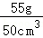
＝1.1g/cm3＝1.1×103kg/m3。故答案为：
（1）水平；161；
（2）50；
（3）1.1×103kg/m3。
【点评】此题是测量液体的密度，主要考查了有关天平及量筒的使用和读数，同时考查了密度的计算。在此实验中，要掌握测量液体密度的方法，通过量筒中液体的质量和体积来进行计算。
31．【分析】（1）滑动变阻器不起作用的原因：被短路或作为定值电阻接入电路。
（2）电压表测灯泡电压，灯泡正常工作时，电压表示数为灯泡的额定电压，读出电流值，根据P＝UI计算功率。
【解答】解：（1）闭合开关S，发现小灯泡L发光暗淡，无论如何移动滑动变阻器的滑片P，电压表、电流表均有示数，但都不改变，说明滑动变阻器不起作用，可能是滑动变阻器同时接了下面两个接线柱。
（2）电压表测灯泡电压，灯泡正常工作时，电压表示数为2.5V，
电流表0～0.6A量程，每一个大格代表0.2A，每一个小格代表0.02A，电流为0.3A，
P＝UI＝2.5V×0.3A＝0.75W。
故答案为：（1）滑动变阻器同时接了下面两个接线柱；（2）0.3；0.75。
【点评】此题是测量电功率的实验，考查了滑动变阻器的接法及使用，考查了电压表的读数及电功率的计算，这些都是很基础、很重点的内容，在试题中出现的频率高，综合性较强。
32．【分析】（1）物距大于2f时，凸透镜成倒立缩小的实像，照相机根据这个原理制成；
（2）根据物近像远像变大的特点分析，要使像变大，则应减小物距，并增大像距；
（3）求出物距，根据物距的大小，得出成像特点。
【解答】解：（1）如图所示，物距大于像距，此时成倒立缩小的实像，能够说明照相机的成像原理，故A符合题意；
（2）保持透镜在50cm刻度线处不动，如果想在光屏上得到更大的清晰的像，应使物距缩小，则像距变大，所以应将蜡烛右移，同时光屏也向右移。故D符合题意；
（3）保持透镜在50cm刻度线处不动，若将点燃的蜡烛放在光具座上80cm刻度线处，则此时物距大于2f，将光屏放在光具座上透镜的左侧，通过移动光屏，在光屏上可呈现烛焰清晰的倒立缩小的实像。故B符合题意。
故答案为：（1）A；（2）D；（3）B。
【点评】熟练掌握凸透镜成像的规律，能根据实验中物距与像距的变化，判断成像的特点与规律是解答的关键。
33．【分析】电压表检测电路故障时，当电路发生断路时，电压表与电源两极相连时，电压表有示数，否则，电压表无示数。
【解答】解：电压表的负接线柱与A接线柱连接，
电压表正接线柱与B接线柱连接，电压表有示数，说明电源完好；
电压表正接线柱与C接线柱连接，电压表有示数，说明BC之间完好；
电压表正接线柱与D接线柱连接，电压表有示数，说明BD之间完好；
电压表正接线柱与E接线柱连接，电压表有示数，说明BE之间完好；
电压表正接线柱与F接线柱连接，电压表没有示数，说明BF之间有断路，而已知AE之间完好，所以故障出在EF之间，可能是灯泡发生断路。
故答案为：EF。
【点评】用电压表检验电路故障时，电压表有示数（一般等于电源电压），说明与之并联的导体发生断路或串联的导体发生短路；电压表无示数，说明与之并联的导体发生短路或串联的导体发生断路。
34．【分析】（1）此实验是为了比较两种品牌的保温杯盛水时的保温效果，所以其自变量是水冷却的时间；
（2）实验中要保证水的初温和水的质量是相同的，这样可以直接观察温度计示数的变化情况来判断保温材料的性能情况；
（3）结合图象分析降温规律，当温度不再改变时，即水温降到了室温。
【解答】解：（1）由题意可知，此实验是为了比较两种品牌的保温杯盛水时的保温效果，而保温效果是通过水冷却的时间体现出来的，所以其自变量是水冷却的时间，而保温杯的品牌不是探究的自变量，故B符合题意；
（2）由图象可知，在相同时间内，乙的水温下降较慢，甲的水温下降较快，所以乙保温杯的保温效果好，故B符合题意；
（3）由图象可知，当温度降到20℃时，温度不再变化，所以室温为20℃，第5小时室温当然也是20℃。
故答案为：（1）B；（2）B；（3）20。
【点评】能正确根据图象，判断温度随时间的变化，进而得出相应的规律，并判断出室温的高低，考查了我们读取图象的能力。
35．【分析】根据甲、乙，蜡块漂浮，其重力等于浮力等于排开水的重力，可知蜡块的质量等于其排开水的质量；
根据丙、丁得出蜡块的体积，由密度公式表示出蜡块的密度。
【解答】解：乙图，蜡块漂浮在水面上，所以G＝F浮＝G排，可知m＝m排＝ρ水（V1﹣V0）；
由丙、丁知，蜡块的体积V＝V2﹣V3；
蜡块的密度ρ蜡＝＝
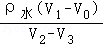
。故答案为：。
【点评】本题是来测量蜡块密度的实验，实验中应用了漂浮时浮力与重力相等的特点，根据阿基米德原理来计算浮力，同时注意实验中测量蜡块体积的方法。
36．【分析】分析表格中数据的变化规律，电压减小1V，电流就增加0.2A，据此分析解答。
【解答】解：由表中数据分析可知，当可变电阻两端电压减小1V时，通过它的电流增加0.2A，
即可变电阻两端电压随电流的增大而均匀减小，可变电阻两端电压U与I是一次函数关系；
设该关系式为：U＝kI+b，
选取前2组数据列方程组有：
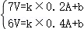
解得：k＝﹣5V/A＝﹣5Ω，b＝8V；
所以，U与I的关系：U＝﹣5Ω•I+8V；
故答案为：﹣5Ω•I+8V。
【点评】本题考查了学生分析数据得出结论的能力，利用好变化关系是关键。
37．【分析】探究电流通过电阻产生的热量跟电阻阻值大小的关系，根据Q＝I2Rt可知，应控制电流和通电时间相同，这样才能得出正确的规律。
【解答】解：
（1）由小新的实验步骤可知，先后两次将不同的电阻丝接入电路，控制了电流相同，但没有控制通电时间相同；
（2）可以去掉电阻箱和电流表，直接将两个电阻丝串联在同一电路中，通电相同时间，比较温度计的示数即可。
故答案为：（1）未控制通电时间相同；
（2）去掉电阻箱和电流表，将两电阻丝串联在同一电路中，通电一定时间，比较温度计的示数。
【点评】真正理解焦耳定律的公式Q＝I2Rt，知道要想探究电流通过电阻产生的热量跟电阻阻值大小的关系，就要控制电流和通电时间相同，是解答的突破口。
38．【分析】物体向上运动，其重心升高，物体向下运动，其重心降低。是否真的是升高，只要测量出重心高的变化即可判断。根据这一思路可设计实验。
【解答】解：
器材：刻度尺。
实验步骤：（1）将双锥体放在轨道右端，用刻度尺测量出双锥体锥尖到桌面的距离记为h1；
（2）将双锥体放在轨道左端，用刻度尺测量出双锥体锥尖到桌面的距离记为h2；
（3）通过测量发现h1＞h2；h1、h2为双锥体重心的高度，在左端轨道虽然高，但是双锥体的重心位置其实低，所以双锥体由于受到重力作用，不能由低处向高处运动。
所以小军的观点错误，小乐的观点正确。
【点评】本题考查应用物理规律解决生活实际问题的能力；知道测量重心高度的变化，是解答本题的关键。这种题目可以激发学生的兴趣，培养解决实际问题的能力，是道好题。
39．【分析】（1）在小林的实验中，酒精灯火焰的温度高于碘的熔点、沸点的温度，出现的碘蒸气也能是碘熔化后，再汽化形成的；
（2）根据液体沸腾的条件是：达到沸点，继续吸热；物质由固态直接变为气态叫升华，升华吸热来设计实验
可以将试管浸入沸水槽中，沸水的温度低于碘的熔点、沸点温度，出现的碘蒸气不会是汽化形成的，只能是升华形成的．
【解答】解：小林的实验中酒精灯火焰温度约为400℃，在加热过程，温度已经超过了碘的熔点．利用水浴加热的方式，在烧杯中放入适量热水，将装有固态碘的碘升华管浸入热水中进行加热，加热一段时间后管内出现紫色的碘蒸气．因为热水的温度低于碘的熔点，碘在这个过程中不会熔化，所以出现碘蒸气一定是碘直接从固态变成了气态．
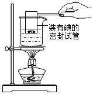
【点评】本题考查了碘的升华实验，不仅考查学生对基本过程的掌握情况，更进一步考查学生运用基本知识和方法分析问题、提出问题的能力．
40．【分析】探究滑轮组效率与所提升重物重力的关系，在不同的动滑轮上挂上重力相同的钩码，向上匀速拉动钩码，测出拉力大小、物体上升的高度，然后由效率公式求出滑轮组效率，分析实验数据，得出实验结论。
【解答】解：
（1）实验步骤：①将弹簧测力计调零，按示意图组装实验器材；
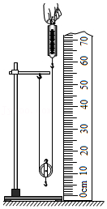
②用调好的弹簧测力计分别测出一个钩码、一个动滑轮所受的重力，分别用G、G动表示。如图1所示组装实验器材，用弹簧测力计竖直向上匀速拉绳子自由端，绳子自由端所受拉力用F表示，绳子自由端移动的距离用s表示，钩码上升的高度用h表示。用弹簧测力计测出F，用刻度尺分别测出s、h．并把测量数据记录在表格中。
③用弹簧测力计测出此另一动滑轮所受重力G动，保证所挂钩码不变，仿照步骤①分别测量对应的F、s、h．并把测量数据记录在表格中。
④利用公式，计算两次实验动滑轮的机械效率η，并将η值记录在表格中。
（2）实验数据记录表：
滑轮重G动/N | 钩码重G/N | 钩码上升高度h/m | 拉力F/N | 绳子自由端移动的距离s/m | 机械效率η |
| | | | | |
| | | | | |
【点评】本题考查了学生对功的计算公式、效率公式的掌握和运用，涉及到设计到实验步骤，属于难题。
五、科普阅读题（共8分，41题3分，42题3分，43题2分）
41．【分析】（1）把疑问陈述出来，就形成了问题，但不一定是科学问题，像个人爱好、道德判断、价值选择方面的问题都不属于科学问题；
（2）解答此题应该围绕影响压力作用效果的因素提出问题；影响压力作用效果的因素有两个﹣﹣﹣压力的大小和受力面积。
【解答】解：（1）A．哪种类型的音乐更好？属于价值选择方面的问题，不属于科学问题。
B．改变导体两端的电压，导体的电阻会改变吗？属于科学问题。
C．水的温度越高，水蒸发得越快吗？属于科学问题。
D．物体所受浮力的大小与物体的密度有关吗？属于科学问题。
E．应该鼓励市民乘坐公共交通工具出行吗？属于道德判断、价值选择方面的问题都不属于科学问题。
（2）根据一个同学的脚印深，另一个同学的脚印浅，可以提出如下问题：
1、压力的作用效果与受力面积有关吗？
2、压力的作用效果与哪些因素有关？
3、压力的作用效果与压力的大小有关吗？
以上答案任选其一回答即可。
故答案为：（1）BCD；（2）压力的作用效果与受力面积有关吗？
【点评】（2）题答案不唯一，只要能围绕影响压力的作用效果的因素提出问题，只要合理均是可以的。
六、解答题（共1小题，满分5分）
42．【分析】（1）①换能器一般用压电陶瓷材料制成，可将发射机产生的电信号转换为声信号，也可以将接收机接收的声信号转换为电信号．
②根据“蛟龙”号在深海中下潜深度的压强特点分析；
（2）根据已知“蛟龙”号在7000米深度时受到的浮力大概比在海面时要大800多公斤力，利用阿基米德原理得出浮力的关系式，然后解答即可求出体积．
【解答】解：（1）①由材料可知：换能器一般用压电陶瓷材料制成，可将发射机产生的电信号转换为声信号，也可以将接收机接收的声信号转换为电信号．所以，换能器可实现电信号与声信号的相互转换．
②由于在7000米深的海水密度变成每立方米1059公斤，则“蛟龙“号下潜到7000米深度时其受到的海水压强非常大，舱内的海水需要很大的压强才能排出舱外，所以不能像潜艇那样采用排水的方法实现上浮．
（2）根据题干可知：海面海水的密度ρ1＝1021kg/m3，在7000米深的海水密度ρ2＝1059kg/m3，
已知在7000米深度时受到的浮力大概比在海面时要大800多公斤力，即：F浮2﹣F浮1＝△F浮，
由于“蛟龙”号都处于浸没状态，所以，根据F浮＝ρ液gV排可得：
ρ2gV﹣ρ1gV＝△F浮，
即：1059kg/m3×10N/kg×V﹣1021kg/m3×10N/kg×V＝800公斤力＝8000N，
解得：V＝21.05m3．
故答案为：
（1）①电；声；②：“蛟龙“号下潜到7000米深度时其受到的海水压强非常大，舱内的海水需要很大的压强才能排出舱外，所以不能像潜艇那样采用排水的方法实现上浮；
（2）“蛟龙”号体积为21.05m3．
【点评】本题是材料题，考查学生的阅读分析能力和阿基米德原理的应用，本题关键是增强学生的爱国热情．
七、计算题（共8分，每小题4分）
43．【分析】（1）由该器件的电流I和其两端电压U关系图象，找到某一电压下对应的电流值，根据I＝计算总电阻，根据并联电路的电阻特点计算R2的阻值；
（2）由P＝
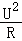
UI计算R2的额定电功率。【解答】解：
（1）由乙图该器件的电流I和其两端电压U关系图象可知：当U＝6V时，通过其电路I＝1.5A，
由并联电路的电压特点可知此时：U＝U1＝U2＝6V，
由欧姆定律可得，当a、b两端电压为3V时通过电阻R1的电流：
I1＝
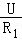
＝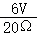
＝0.3A，由并联电路中电流特点可得，通过电阻R2的电流：
I2＝I﹣I1＝1.5A﹣0.3A＝1.2A，
所以R2的阻值：
R2＝
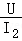
＝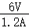
＝5Ω；（2）电阻R2的额定电功率：
P＝UI2＝6V×1.2A＝7.2W。
答：（1）电阻R2的阻值为5Ω；
（2）电阻R2的额定电功率为7.2W。
【点评】本题考查了并联电路的电阻特点、欧姆定律和电功率计算公式的应用。关键是从图象中找到有用信息。
44．【分析】（1）已知绳子自由端竖直向下的拉力F为400N，利用P＝＝
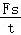
＝Fv可求得拉力F做功的功率P；（2）已知滑轮的机械效率，利用η＝
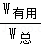
可求得物体A所受的重力；（3）根据求得的物体A所受的重力，利用F＝（GA+G动）可求得动滑轮所受的重力。
【解答】解：（1）物体A上升的速度vA＝0.1m/s，则绳子移动的速度v＝2vA＝2×0.1m/s＝0.2m/s，
拉力F做功的功率P＝＝＝Fv＝400N×0.2m/s＝80W；
（2）滑轮的机械效率η＝＝90%，
即＝
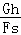
＝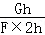
＝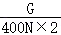
＝90%，解得G＝720N；（3）由图可知，重物A由2段绳子承担，则F＝（GA+G动），即400N＝（720N+G动），
解得G动＝80N。
答：（1）拉力F做功的功率P为80W；
（2）物体A所受的重力GA为720N；
（3）动滑轮所受的重力G动为80N。
【点评】此题考查功率的计算和滑轮组绳子拉力的计算，弄清重物A由2段绳子承担是解答此题的关键。
声明：试题解析著作权属菁优网所有，未经书面同意，不得复制发布
日期：2022/3/14 13:39:37；用户：18032927792；邮箱：18032927792；学号：39962732